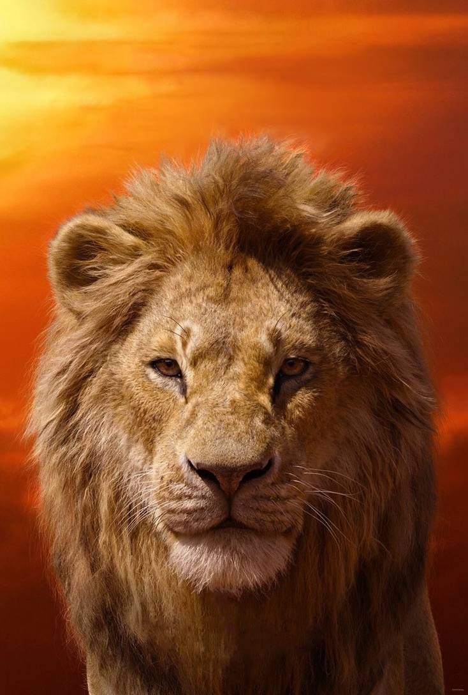

Profile
"Lion King"
In the Pride Lands of Africa, a pride of lions rule over the animal kingdom from Pride Rock. King Mufasa's and Queen Sarabi's newborn son, Simba, is presented to the gathering animals by Rafiki the mandrill, the kingdom's shaman and advisor. Mufasa shows Simba the Pride Lands and explains to him the responsibilities of kingship and the "circle of life", which connects all living things. Mufasa's younger brother, Scar, covets the throne and plots to eliminate Mufasa and Simba, so he may become king. He tricks Simba and his best friend Nala (to whom Simba is betrothed) into exploring a forbidden elephants' graveyard, where they are attacked by spotted hyenas led by Shenzi, Kamari, and Azizi. Mufasa is alerted about the incident by his majordomo, the hornbill Zazu, and rescues the cubs. Though upset with Simba, Mufasa forgives him and explains that the great kings of the past watch over them from the night sky, from which he will one day watch over Simba. Meanwhile, Scar visits the hyenas and manages to convince them to help him overthrow Mufasa in exchange for hunting rights in the Pride Lands.
Scar sets a trap for his brother and nephew, luring Simba into a gorge and having the hyenas drive a large herd of wildebeest into a stampede that will trample him. He informs Mufasa of Simba's peril, knowing that the king will rush to save his son. Mufasa saves Simba but ends up hanging perilously from the gorge's edge. Scar refuses to help Mufasa, instead sending him falling to his death. He then convinces Simba that the tragedy was Simba's own fault and advises him to leave the kingdom and never return. He orders the hyenas to kill the cub, but Simba escapes. Scar tells the pride that both Mufasa and Simba were killed in the stampede and steps forward as the new king, allowing his three hyena minions and the rest of their large pack to live in the Pride Lands.
Simba collapses in a desert and is rescued by Timon and Pumbaa, a meerkat and warthog, who are fellow outcasts. Simba grows up in the oasis with his two new friends and other animals, living a carefree life under the motto "hakuna matata" ("no worries" in Swahili). Now a young adult, Simba rescues Timon and Pumbaa from a hungry lioness, who turns out to be Nala. She and Simba reunite and fall in love, and she urges him to return home, telling him that the Pride Lands have become a drought-stricken wasteland under Scar's reign. Feeling guilty over his father's death, Simba refuses and storms off. He then encounters Rafiki, who tells him that Mufasa's spirit lives on in Simba. Simba is visited by the ghost of Mufasa in the night sky, who tells him that he must take his rightful place as king. Realizing that he can no longer run from his past, Simba decides to return to the Pride Lands.
Aided by his friends, Simba sneaks past the hyenas at Pride Rock and confronts Scar, who was about to fight Sarabi. Scar taunts Simba over his role in Mufasa's death and backs him to the edge of the rock, where he reveals to him that he murdered Mufasa. Enraged, Simba reveals the truth to the rest of the pride. Scar attempts to defend himself, but his knowledge of Mufasa's last moment (despite having previously claimed that he arrived too late at the gorge) exposes his role in Mufasa's death. Timon, Pumbaa, Rafiki, Zazu, and the lionesses fend off the hyenas while Scar, attempting to escape, is cornered by Simba at the top of Pride Rock. Scar begs for mercy and attempts to blame the hyenas for his actions; Simba spares his life, but orders him to leave the Pride Lands forever. Scar refuses and attacks his nephew, but Simba manages to toss him from the top of the rock. Scar survives the fall, but is attacked and killed by the hyenas, who overheard his attempt to betray them. Afterwards, Simba takes over the kingship and makes Nala his queen.
Later, with Pride Rock restored to its usual state, Rafiki presents Simba and Nala's newborn cub to the assembled animals, continuing the circle of life.